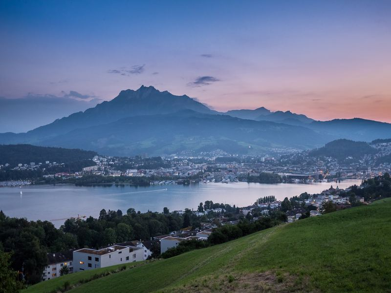

Tous niveaux
Good Morning Scenic Run
Partir avant la foule
Une course matinale tranquille le long du lac et à travers la vieille ville, pendant que Lucerne se réveille encore. Les lieux emblématiques sans personne, dans la plus belle lumière du jour. Retour vers 08h00 – à temps pour le petit-déjeuner ou le premier rendez-vous.
- Distance
- 5–6 km (3.1–3.7 mi)
- Allure
- 6:00–6:30 min/km (9:40–10:30 min/mi)
- Départ
- 07:15